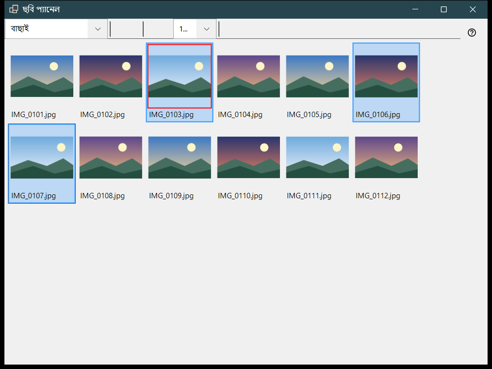
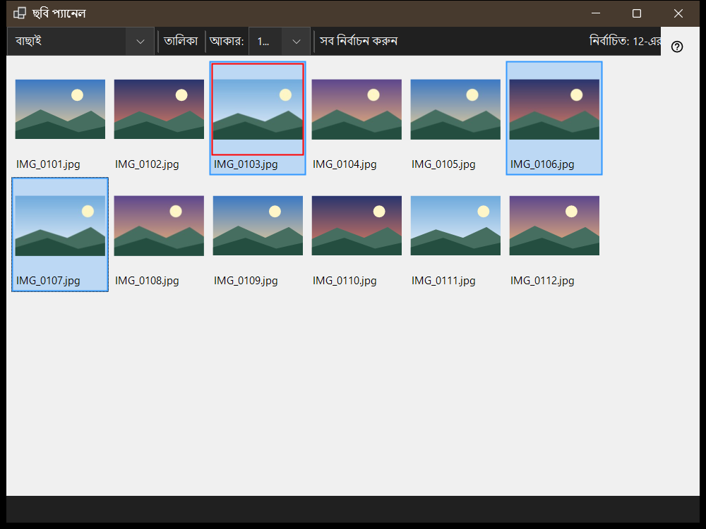

ছবি প্যানেল
এটি কীসের জন্য
ছবি প্যানেল ভিউয়ার থেকে F3 চাপলে খোলে এবং দুটি মোডে কাজ করে, যা প্যানেল মোড ঘরে বাছা হয়: বাছাই, অর্থাৎ বর্তমান ফোল্ডারের থাম্বনেইলের গ্রিড, এবং ফাইল ম্যানেজার, অর্থাৎ স্থান, ফোল্ডার ও ফাইল কমান্ডসহ একটি ব্রাউজার। ফাইল দেখা, নির্বাচন করা ও প্যানেল বন্ধ করা প্রধান উইন্ডোর প্রদর্শিত বিষয় বদলায় না।


এই ক্রমে
- ভিউয়ারে F3 চাপুন।
- প্যানেল মোড থেকে মোড বেছে নিন।
- ফাইল নির্বাচন করুন: ক্লিক, পরিসরের জন্য Shift+ক্লিক, একটি ফাইল টগল করতে Ctrl+ক্লিক, অথবা ফ্রেম টেনে।
- বাছাই মোডে নির্বাচনটি গন্তব্য ফোল্ডারে সরাতে 0-9 চাপুন, অথবা কপি করতে উপরের সারির অঙ্কের সঙ্গে Shift চাপুন; Ctrl+Z শেষ কাজটি ফিরিয়ে আনে।
- প্রধান উইন্ডোতে খুলতে ফাইলে ডাবল-ক্লিক করুন বা Enter চাপুন।
- চলমান কাজ বাতিল করতে Esc চাপুন, তারপর প্যানেল বন্ধ করতে আবার Esc চাপুন।
উপাদানসমূহ
প্যানেল মোড
প্যানেল মোড বাছাই ও ফাইল ম্যানেজারের মধ্যে বদলায়। বাছাই মোড দ্রুত সরানো ও কপির জন্য বর্তমান ফোল্ডারের থাম্বনেইল দেখায়; ফাইল ম্যানেজার যেকোনো ফোল্ডার ব্রাউজ করে এবং ফাইল কমান্ড দেয়।
আকার, বিন্যাস ও নির্বাচন
স্লাইডার (আকার:) থাম্বনেইলের আকার ঠিক করে, টাইল ও তালিকা বোতাম বিন্যাস বদলায় (Ctrl+L), আর নির্বাচন কাউন্টার দেখায় মোট ফাইলের মধ্যে কতগুলো নির্বাচিত।
নির্বাচন ও বাছাই
ক্লিক নির্বাচন করে, Shift+ক্লিক পরিসর নির্বাচন করে, Ctrl+ক্লিক একটি ফাইল টগল করে, আর টানলে নির্বাচন ফ্রেম আঁকা হয়। Ctrl+A সব নির্বাচন করে, Ctrl+Shift+A নির্বাচন সরায়, Ctrl+I উল্টে দেয়, Space ফাইল চিহ্নিত করে, আর তীর, Home, End, PgUp ও PgDn দিয়ে ঘোরা যায়। 0-9 অঙ্ক নির্বাচনটি সেই কী-র গন্তব্য ফোল্ডারে সরায়, উপরের সারির অঙ্কের সঙ্গে Shift সেটি কপি করে, Del মুছে ফেলে এবং Ctrl+Z শেষ কাজটি ফিরিয়ে আনে।
ফিল্টার ও লুকানো ফাইল
বিষয়বস্তু ফিল্টার মিডিয়া ফাইল, মিডিয়া এবং নথি বা সমস্ত ফাইল বেছে নেয়, আর লুকানো বোতাম লুকানো ফাইল দেখায় বা লুকায়। সেটিংস.. বোতাম সেটিংস উইন্ডোটি ফাইল ম্যানেজার পৃষ্ঠায় খোলে, যেখানে প্রদর্শন মোড, ফিল্টার, অবস্থান এবং মনে রাখা বাছাইয়ের ক্রম ঠিক করা হয়।
ফাইল কমান্ড
Ctrl+C, Ctrl+X ও Ctrl+V কপি, কাট ও পেস্ট করে, F2 নাম বদলায়, Ctrl+Shift+N ফোল্ডার তৈরি করে, Del ও Shift+Del নির্বাচিত আইটেম মুছে ফেলে এবং Alt+Enter বৈশিষ্ট্য দেখায়। রিসোর্সগুলোর মধ্যে কপি বা সরানো এই পিসির মধ্য দিয়ে যায়।
ZIP তৈরি করুন
ZIP তৈরি করুন নির্বাচিত সব ফোল্ডার ও ফাইল একটি আর্কাইভে প্যাক করে। মূল ফাইল মোছা ডিফল্টভাবে বন্ধ এবং আর্কাইভ যাচাই ও প্রকাশের পরেই অনুমোদিত হয়।
এখানে নিষ্কাশন করুন
এখানে নিষ্কাশন করুন একটি নির্বাচিত আর্কাইভে কাজ করে: ফোল্ডার ও সাধারণ ফাইল রাখা হয়, মূল আর্কাইভ নিজের জায়গায় থাকে এবং নিষ্কাশিত প্রোগ্রাম কখনও চালানো হয় না। Esc কাজটি বাতিল করে।